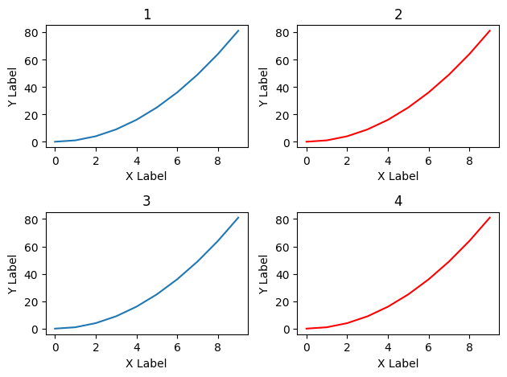
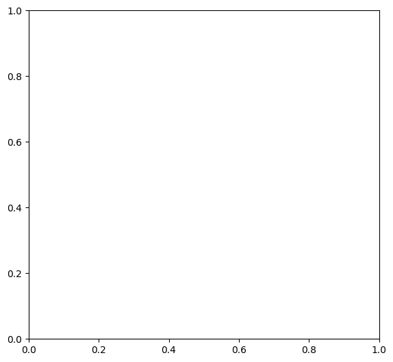
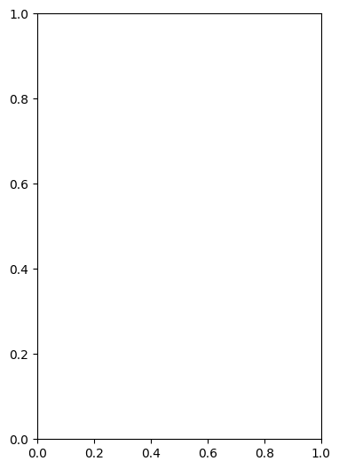
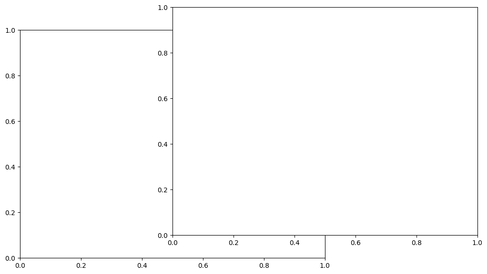
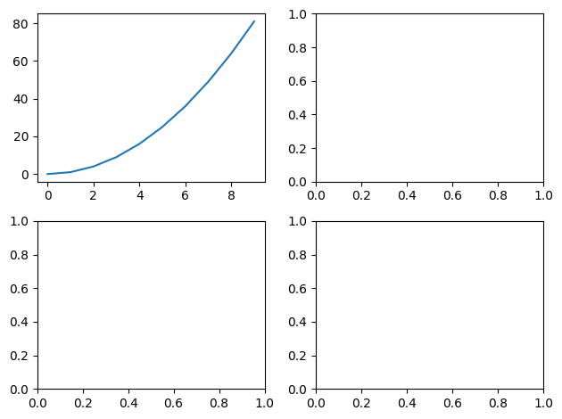
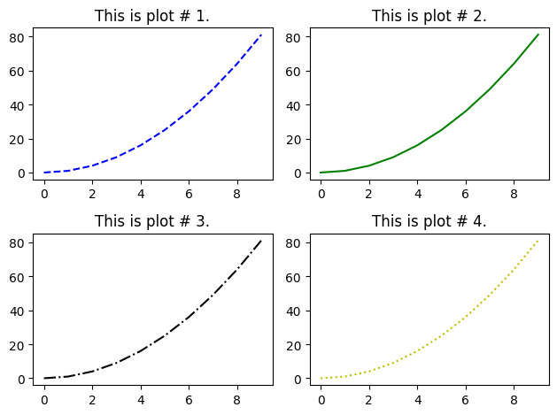
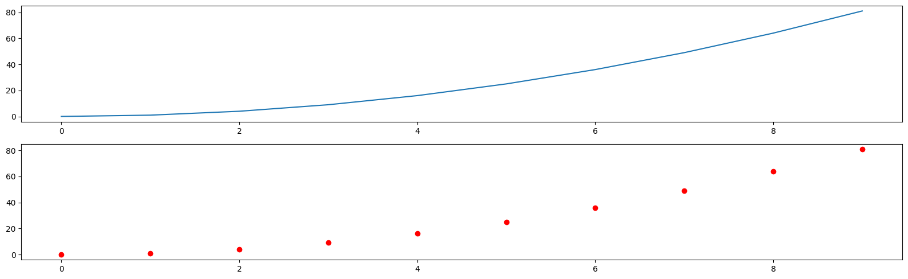
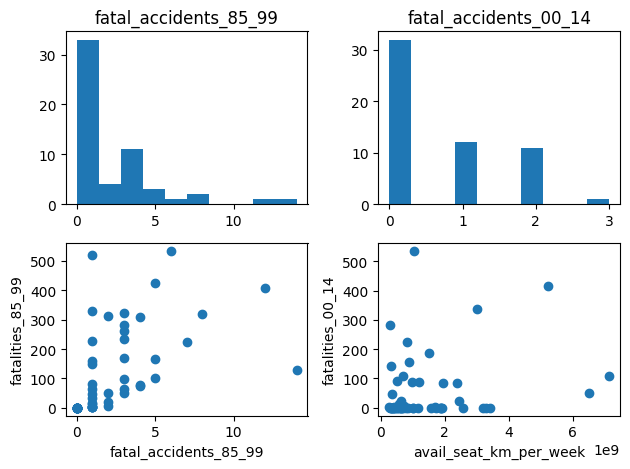
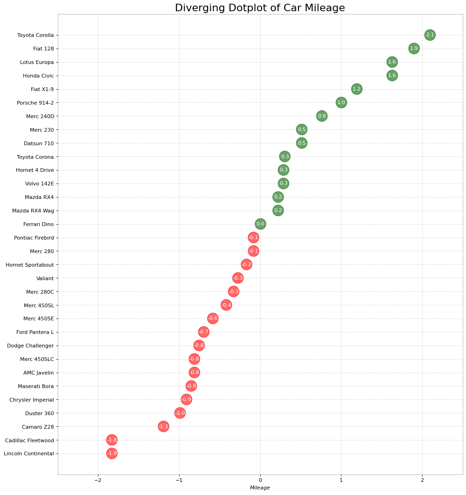
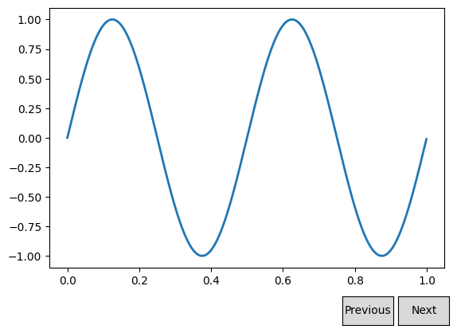

14.1. Matplotlib#
import matplotlib.pyplot as plt
%matplotlib inline
x = list(range(10))
y = [ele*ele for ele in x]
x
[0, 1, 2, 3, 4, 5, 6, 7, 8, 9]
y
[0, 1, 4, 9, 16, 25, 36, 49, 64, 81]
# Method 1
# A simple plot
plt.plot(x,y)
[<matplotlib.lines.Line2D at 0x7fd0d5f7dbd0>]
plt.plot(x,y, 'r.')
[<matplotlib.lines.Line2D at 0x7fd0d3e11750>]
plt.plot(x,y,
linewidth=2,
linestyle='-.',
color='red',
marker='o',
markersize=20,
markeredgewidth=2,
markeredgecolor='lawngreen',
markerfacecolor='black',
)
[<matplotlib.lines.Line2D at 0x7fd0d3eac2b0>]
# Shortcut for controlling the line style and color
# plt.plot(x,y, 'y--')
# https://matplotlib.org/stable/api/_as_gen/matplotlib.axes.Axes.plot.html
plt.plot(x,y,
linewidth=1,
linestyle='--',
color='red',
marker='o',
markersize=15,
markeredgewidth=3,
markeredgecolor='blue',
markerfacecolor='black',
fillstyle='left')
[<matplotlib.lines.Line2D at 0x7fd0d3d06680>]
# Adding labels and titles
plt.plot(x,y)
plt.plot(x,x, 'r')
plt.xlabel('X Label')
plt.ylabel('Y Label')
plt.title('Title')
plt.legend(['ABCD', 'EFGH'], loc='best')
<matplotlib.legend.Legend at 0x7fd0d3d5a920>
# Subplots -- have multiple plots
plt.subplot(1,2,1)
plt.plot(x,y)
plt.xlabel('X Label')
plt.ylabel('Y Label')
plt.title('Title')
plt.subplot(1,2,2)
plt.plot(x,y, '--r')
plt.xlabel('X Label')
plt.ylabel('Y Label')
plt.title('Title')
Text(0.5, 1.0, 'Title')
# Subplots -- have multiple plots
plt.subplot(2,2,1)
plt.plot(x,y)
plt.xlabel('X Label')
plt.ylabel('Y Label')
plt.title('1')
plt.subplot(2,2,2)
plt.plot(x,y, 'r')
plt.xlabel('X Label')
plt.ylabel('Y Label')
plt.title('2')
plt.subplot(2,2,3)
plt.plot(x,y)
plt.xlabel('X Label')
plt.ylabel('Y Label')
plt.title('3')
plt.subplot(2,2,4)
plt.plot(x,y, 'r')
plt.xlabel('X Label')
plt.ylabel('Y Label')
plt.title('4')
plt.tight_layout()

# Method 2 -- Object Oriented way
fig = plt.figure()
axes = fig.add_axes([0.1, 0.1, 0.8, 1])
# rect : sequence of float
# The dimensions [left, bottom, width, height] of the new axes.
# All quantities are in fractions of figure width and height.

fig = plt.figure()
axes = fig.add_axes([0.1, 0.1, 0.5, 1])
# rect : sequence of float
# The dimensions [left, bottom, width, height] of the new axes.
# All quantities are in fractions of figure width and height.

fig = plt.figure()
axes = fig.add_axes([0.1, 0.1, 1, 1])
# rect : sequence of float
# The dimensions [left, bottom, width, height] of the new axes.
# All quantities are in fractions of figure width and height.
axes.plot(x,y)
axes.set_xlabel('X Label')
axes.set_ylabel('Y Label')
axes.set_title('Title')
Text(0.5, 1.0, 'Title')
fig = plt.figure()
axes1 = fig.add_axes([0, 0, 1, 1])
axes2 = fig.add_axes([0.5, 0.1, 1, 1])
# rect : sequence of float
# The dimensions [left, bottom, width, height] of the new axes.
# All quantities are in fractions of figure width and height.

fig = plt.figure()
axes1 = fig.add_axes([0, 0, 1, 1])
axes2 = fig.add_axes([0.12, 0.45, 0.45, 0.45])
# rect : sequence of float
# The dimensions [left, bottom, width, height] of the new axes.
# All quantities are in fractions of figure width and height.
axes1.plot(x,y)
axes1.set_xlabel('X Label')
axes1.set_ylabel('Y Label')
axes1.set_title('Larger Plot')
axes2.plot(x,y, 'ro')
axes2.set_xlabel('X Label')
axes2.set_ylabel('Y Label')
axes2.set_title('Smaller Plot')
axes3 = fig.add_axes([0.8, 0.2, 0.25, 0.25])
axes3.plot(x,y, 'y--')
axes3.set_xlabel('X Label')
axes3.set_ylabel('Y Label')
axes3.set_title('Smallest Plot')
Text(0.5, 1.0, 'Smallest Plot')
y
[0, 1, 4, 9, 16, 25, 36, 49, 64, 81]
fig, axes = plt.subplots(nrows=2, ncols=2)
plt.tight_layout()
axes
array([[<Axes: >, <Axes: >],
[<Axes: >, <Axes: >]], dtype=object)
print(axes)
[[<Axes: > <Axes: >]
[<Axes: > <Axes: >]]
type(axes)
numpy.ndarray
fig, axes = plt.subplots(nrows=2, ncols=2)
axes[0][0].plot(x,y)
plt.tight_layout()

fig, axes = plt.subplots(nrows=2, ncols=2)
line_styles = ['', '--', '-', '-.', ':']
colors = ['', 'b', 'g', 'k', 'y']
for idx, ax in enumerate(axes.reshape(-1), 1):
ax.plot(x,y, color=colors[idx], linestyle=line_styles[idx])
ax.set_title(f'This is plot # {idx}.')
plt.tight_layout()

axes[0][0]
<Axes: title={'center': 'This is plot # 1.'}>
axes.reshape(-1)
array([<Axes: title={'center': 'This is plot # 1.'}>,
<Axes: title={'center': 'This is plot # 2.'}>,
<Axes: title={'center': 'This is plot # 3.'}>,
<Axes: title={'center': 'This is plot # 4.'}>], dtype=object)
fig, axes = plt.subplots(nrows=2, ncols=1, figsize=(16,5))
axes[0].plot(x,y)
axes[1].plot(x,y, 'ro')
plt.tight_layout()
# figsize : (float, float), optional, default: None
# width, height in inches. If not provided, defaults to [6.4, 4.8]

# fig.savefig('figure') #default is png
# fig.savefig('figure.jpeg')
# fig.savefig('figure2', dpi=300)
fig.savefig('figure2svg.svg', dpi=300)
fig = plt.figure()
axes = fig.add_axes([0.1, 0.1, 1, 1])
# rect : sequence of float
# The dimensions [left, bottom, width, height] of the new axes.
# All quantities are in fractions of figure width and height.
y3 = [ele*3 for ele in y]
axes.plot(x,y, label='x,y')
axes.plot(x,y3, label='x,y**3')
axes.set_xlabel('X Label')
axes.set_ylabel('Y Label')
axes.set_title('Title')
axes.legend(loc='lower right', fontsize=24)
# axes.legend(loc=1)
axes.legend(loc=[0.5,0.5])
# Location String Location Code
# 'best' 0
# 'upper right' 1
# 'upper left' 2
# 'lower left' 3
# 'lower right' 4
# 'right' 5
# 'center left' 6
# 'center right' 7
# 'lower center' 8
# 'upper center' 9
# 'center' 10
<matplotlib.legend.Legend at 0x7fd0d305e410>
fig = plt.figure()
axes = fig.add_axes([0.1, 0.1, 1, 1])
# axes.plot(x,y, 'r')
# axes.plot(x,y, color='yellow')
# axes.plot(x,y, 'k')
# axes.plot(x,y, color='black')
# # https://www.color-hex.com/
axes.plot(x,y, color='#F75D5D', linewidth=10)
[<matplotlib.lines.Line2D at 0x7fd0d3867df0>]
fig = plt.figure()
axes = fig.add_axes([0.1, 0.1, 1, 1])
# axes.plot(x,y, 'r', linewidth=4)
axes.plot(x,y, 'o--b', lw=4, alpha=0.1, ms=20)
[<matplotlib.lines.Line2D at 0x7fd0d3841a80>]
fig = plt.figure()
axes = fig.add_axes([0.1, 0.1, 1, 1])
axes.plot(x,y, 'r-.', lw=5, linestyle=':')
# Linestyle Description
# '-' or 'solid' solid line
# '--' or 'dashed' dashed line
# '-.' or 'dashdot' dash-dotted line
# ':' or 'dotted' dotted line
# 'None' or ' ' or '' draw nothing
/tmp/ipykernel_8014/75132765.py:4: UserWarning: linestyle is redundantly defined by the 'linestyle' keyword argument and the fmt string "r-." (-> linestyle='-.'). The keyword argument will take precedence.
axes.plot(x,y, 'r-.', lw=5, linestyle=':')
[<matplotlib.lines.Line2D at 0x7fd0d38e6890>]
fig = plt.figure()
axes = fig.add_axes([0.1, 0.1, 1, 1])
# axes.plot(x,y, marker='o')
axes.plot(x,y, ' b', marker='^', markersize=10)
#https://matplotlib.org/3.1.1/api/markers_api.html
[<matplotlib.lines.Line2D at 0x7fd0d3a1b880>]
fig = plt.figure()
axes = fig.add_axes([0.1, 0.1, 1, 1])
# axes.plot(x,y, 'b', marker='o', markersize=10, markerfacecolor='red')
axes.plot(x,y, 'b', marker='o', markersize=30, markerfacecolor='yellow', markeredgewidth=3, markeredgecolor='k')
#https://matplotlib.org/3.1.1/api/markers_api.html
[<matplotlib.lines.Line2D at 0x7fd0d3a65cc0>]
fig = plt.figure()
axes = fig.add_axes([0, 0, 1, 1])
axes.plot(x,y)
axes.set_xlim([0,5])
axes.set_ylim([0,30])
(0.0, 30.0)
# https://github.com/rougier/matplotlib-tutorial
# https://medium.com/@kapil.mathur1987/matplotlib-an-introduction-to-its-object-oriented-interface-a318b1530aed
import numpy as np
t = 2*np.pi/3
plt.plot([t,t],[0,np.cos(t)], color ='blue', linewidth=1.5, linestyle="--")
plt.scatter([t,],[np.cos(t),], 50, color ='blue')
plt.annotate(r'$\sin(\frac{2\pi}{3})=\frac{\sqrt{3}}{2}$',
xy=(t, np.sin(t)), xycoords='data',
xytext=(+10, +30), textcoords='offset points', fontsize=16,
arrowprops=dict(arrowstyle="->", connectionstyle="arc3,rad=.2"))
plt.plot([t,t],[0,np.sin(t)], color ='red', linewidth=1.5, linestyle="--")
plt.scatter([t,],[np.sin(t),], 50, color ='red')
plt.annotate(r'$\cos(\frac{2\pi}{3})=-\frac{1}{2}$',
xy=(t, np.cos(t)), xycoords='data',
xytext=(-90, -50), textcoords='offset points', fontsize=16,
arrowprops=dict(arrowstyle="->", connectionstyle="arc3,rad=.2"))
Text(-90, -50, '$\\cos(\\frac{2\\pi}{3})=-\\frac{1}{2}$')
import matplotlib.pyplot as plt
import pandas as pd
import numpy as np
data = pd.read_csv("https://raw.githubusercontent.com/fivethirtyeight/data/master/airline-safety/airline-safety.csv")
# Get figure object and an array of axes objects
fig, arr_ax = plt.subplots(2, 2)
display(data)
/tmp/ipykernel_8014/1325689307.py:2: DeprecationWarning:
Pyarrow will become a required dependency of pandas in the next major release of pandas (pandas 3.0),
(to allow more performant data types, such as the Arrow string type, and better interoperability with other libraries)
but was not found to be installed on your system.
If this would cause problems for you,
please provide us feedback at https://github.com/pandas-dev/pandas/issues/54466
import pandas as pd
| airline | avail_seat_km_per_week | incidents_85_99 | fatal_accidents_85_99 | fatalities_85_99 | incidents_00_14 | fatal_accidents_00_14 | fatalities_00_14 | |
|---|---|---|---|---|---|---|---|---|
| 0 | Aer Lingus | 320906734 | 2 | 0 | 0 | 0 | 0 | 0 |
| 1 | Aeroflot* | 1197672318 | 76 | 14 | 128 | 6 | 1 | 88 |
| 2 | Aerolineas Argentinas | 385803648 | 6 | 0 | 0 | 1 | 0 | 0 |
| 3 | Aeromexico* | 596871813 | 3 | 1 | 64 | 5 | 0 | 0 |
| 4 | Air Canada | 1865253802 | 2 | 0 | 0 | 2 | 0 | 0 |
| 5 | Air France | 3004002661 | 14 | 4 | 79 | 6 | 2 | 337 |
| 6 | Air India* | 869253552 | 2 | 1 | 329 | 4 | 1 | 158 |
| 7 | Air New Zealand* | 710174817 | 3 | 0 | 0 | 5 | 1 | 7 |
| 8 | Alaska Airlines* | 965346773 | 5 | 0 | 0 | 5 | 1 | 88 |
| 9 | Alitalia | 698012498 | 7 | 2 | 50 | 4 | 0 | 0 |
| 10 | All Nippon Airways | 1841234177 | 3 | 1 | 1 | 7 | 0 | 0 |
| 11 | American* | 5228357340 | 21 | 5 | 101 | 17 | 3 | 416 |
| 12 | Austrian Airlines | 358239823 | 1 | 0 | 0 | 1 | 0 | 0 |
| 13 | Avianca | 396922563 | 5 | 3 | 323 | 0 | 0 | 0 |
| 14 | British Airways* | 3179760952 | 4 | 0 | 0 | 6 | 0 | 0 |
| 15 | Cathay Pacific* | 2582459303 | 0 | 0 | 0 | 2 | 0 | 0 |
| 16 | China Airlines | 813216487 | 12 | 6 | 535 | 2 | 1 | 225 |
| 17 | Condor | 417982610 | 2 | 1 | 16 | 0 | 0 | 0 |
| 18 | COPA | 550491507 | 3 | 1 | 47 | 0 | 0 | 0 |
| 19 | Delta / Northwest* | 6525658894 | 24 | 12 | 407 | 24 | 2 | 51 |
| 20 | Egyptair | 557699891 | 8 | 3 | 282 | 4 | 1 | 14 |
| 21 | El Al | 335448023 | 1 | 1 | 4 | 1 | 0 | 0 |
| 22 | Ethiopian Airlines | 488560643 | 25 | 5 | 167 | 5 | 2 | 92 |
| 23 | Finnair | 506464950 | 1 | 0 | 0 | 0 | 0 | 0 |
| 24 | Garuda Indonesia | 613356665 | 10 | 3 | 260 | 4 | 2 | 22 |
| 25 | Gulf Air | 301379762 | 1 | 0 | 0 | 3 | 1 | 143 |
| 26 | Hawaiian Airlines | 493877795 | 0 | 0 | 0 | 1 | 0 | 0 |
| 27 | Iberia | 1173203126 | 4 | 1 | 148 | 5 | 0 | 0 |
| 28 | Japan Airlines | 1574217531 | 3 | 1 | 520 | 0 | 0 | 0 |
| 29 | Kenya Airways | 277414794 | 2 | 0 | 0 | 2 | 2 | 283 |
| 30 | KLM* | 1874561773 | 7 | 1 | 3 | 1 | 0 | 0 |
| 31 | Korean Air | 1734522605 | 12 | 5 | 425 | 1 | 0 | 0 |
| 32 | LAN Airlines | 1001965891 | 3 | 2 | 21 | 0 | 0 | 0 |
| 33 | Lufthansa* | 3426529504 | 6 | 1 | 2 | 3 | 0 | 0 |
| 34 | Malaysia Airlines | 1039171244 | 3 | 1 | 34 | 3 | 2 | 537 |
| 35 | Pakistan International | 348563137 | 8 | 3 | 234 | 10 | 2 | 46 |
| 36 | Philippine Airlines | 413007158 | 7 | 4 | 74 | 2 | 1 | 1 |
| 37 | Qantas* | 1917428984 | 1 | 0 | 0 | 5 | 0 | 0 |
| 38 | Royal Air Maroc | 295705339 | 5 | 3 | 51 | 3 | 0 | 0 |
| 39 | SAS* | 682971852 | 5 | 0 | 0 | 6 | 1 | 110 |
| 40 | Saudi Arabian | 859673901 | 7 | 2 | 313 | 11 | 0 | 0 |
| 41 | Singapore Airlines | 2376857805 | 2 | 2 | 6 | 2 | 1 | 83 |
| 42 | South African | 651502442 | 2 | 1 | 159 | 1 | 0 | 0 |
| 43 | Southwest Airlines | 3276525770 | 1 | 0 | 0 | 8 | 0 | 0 |
| 44 | Sri Lankan / AirLanka | 325582976 | 2 | 1 | 14 | 4 | 0 | 0 |
| 45 | SWISS* | 792601299 | 2 | 1 | 229 | 3 | 0 | 0 |
| 46 | TACA | 259373346 | 3 | 1 | 3 | 1 | 1 | 3 |
| 47 | TAM | 1509195646 | 8 | 3 | 98 | 7 | 2 | 188 |
| 48 | TAP - Air Portugal | 619130754 | 0 | 0 | 0 | 0 | 0 | 0 |
| 49 | Thai Airways | 1702802250 | 8 | 4 | 308 | 2 | 1 | 1 |
| 50 | Turkish Airlines | 1946098294 | 8 | 3 | 64 | 8 | 2 | 84 |
| 51 | United / Continental* | 7139291291 | 19 | 8 | 319 | 14 | 2 | 109 |
| 52 | US Airways / America West* | 2455687887 | 16 | 7 | 224 | 11 | 2 | 23 |
| 53 | Vietnam Airlines | 625084918 | 7 | 3 | 171 | 1 | 0 | 0 |
| 54 | Virgin Atlantic | 1005248585 | 1 | 0 | 0 | 0 | 0 | 0 |
| 55 | Xiamen Airlines | 430462962 | 9 | 1 | 82 | 2 | 0 | 0 |
import matplotlib.pyplot as plt
import pandas as pd
import numpy as np
data = pd.read_csv("https://raw.githubusercontent.com/fivethirtyeight/data/master/airline-safety/airline-safety.csv")
# Get figure object and an array of axes objects
fig, arr_ax = plt.subplots(2, 2)
# arr_ax[x][x] or arr_ax[x,x]
# Histogram - fatal_accidents_85_99
arr_ax[0,0].hist(data['fatal_accidents_85_99'])
arr_ax[0,0].set_title('fatal_accidents_85_99')
# Histogram - fatal_accidents_00_14
arr_ax[0,1].hist(data['fatal_accidents_00_14'])
arr_ax[0,1].set_title('fatal_accidents_00_14')
# Scatter - fatal_accidents_85_99 vs fatalities_85_99
arr_ax[1,0].scatter(data['fatal_accidents_85_99'], data['fatalities_85_99'])
arr_ax[1,0].set_xlabel('fatal_accidents_85_99')
arr_ax[1,0].set_ylabel('fatalities_85_99')
# scatter - avail_seat_km_per_week vs fatalities_00_14
arr_ax[1,1].scatter(data['avail_seat_km_per_week'], data['fatalities_00_14'])
arr_ax[1,1].set_xlabel('avail_seat_km_per_week')
arr_ax[1,1].set_ylabel('fatalities_00_14')
plt.tight_layout()
plt.show()

# https://www.machinelearningplus.com/plots/top-50-matplotlib-visualizations-the-master-plots-python/
# https://levelup.gitconnected.com/an-introduction-of-python-matplotlib-with-40-basic-examples-5174383a6889
import pandas as pd
import numpy as np
# Prepare Data
df = pd.read_csv("https://github.com/selva86/datasets/raw/master/mtcars.csv")
x = df.loc[:, ['mpg']]
df['mpg_z'] = (x - x.mean())/x.std()
df['colors'] = ['red' if x < 0 else 'darkgreen' for x in df['mpg_z']]
df.sort_values('mpg_z', inplace=True)
df.reset_index(inplace=True)
# Draw plot
plt.figure(figsize=(14,16), dpi= 80)
plt.scatter(df.mpg_z, df.index, s=450, alpha=.6, color=df.colors)
for x, y, tex in zip(df.mpg_z, df.index, df.mpg_z):
t = plt.text(x, y, round(tex, 1), horizontalalignment='center',
verticalalignment='center', fontdict={'color':'white'})
# Decorations
# Lighten borders
plt.gca().spines["top"].set_alpha(.3)
plt.gca().spines["bottom"].set_alpha(.3)
plt.gca().spines["right"].set_alpha(.3)
plt.gca().spines["left"].set_alpha(.3)
plt.yticks(df.index, df.cars)
plt.title('Diverging Dotplot of Car Mileage', fontdict={'size':20})
plt.xlabel('$Mileage$')
plt.grid(linestyle='--', alpha=0.5)
plt.xlim(-2.5, 2.5)
plt.show()

import numpy as np
import matplotlib.pyplot as plt
from matplotlib.widgets import Button
freqs = np.arange(2, 20, 3)
fig, ax = plt.subplots()
fig.subplots_adjust(bottom=0.2)
t = np.arange(0.0, 1.0, 0.001)
s = np.sin(2*np.pi*freqs[0]*t)
l, = ax.plot(t, s, lw=2)
class Index:
ind = 0
def next(self, event):
self.ind += 1
i = self.ind % len(freqs)
ydata = np.sin(2*np.pi*freqs[i]*t)
l.set_ydata(ydata)
plt.draw()
def prev(self, event):
self.ind -= 1
i = self.ind % len(freqs)
ydata = np.sin(2*np.pi*freqs[i]*t)
l.set_ydata(ydata)
plt.draw()
callback = Index()
axprev = fig.add_axes([0.7, 0.05, 0.1, 0.075])
axnext = fig.add_axes([0.81, 0.05, 0.1, 0.075])
bnext = Button(axnext, 'Next')
bnext.on_clicked(callback.next)
bprev = Button(axprev, 'Previous')
bprev.on_clicked(callback.prev)
plt.show()
